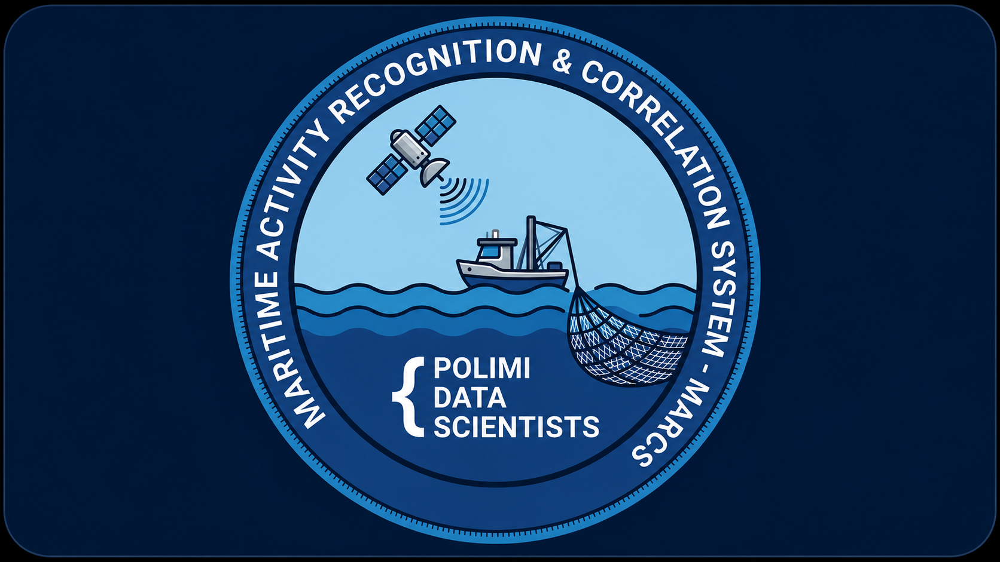
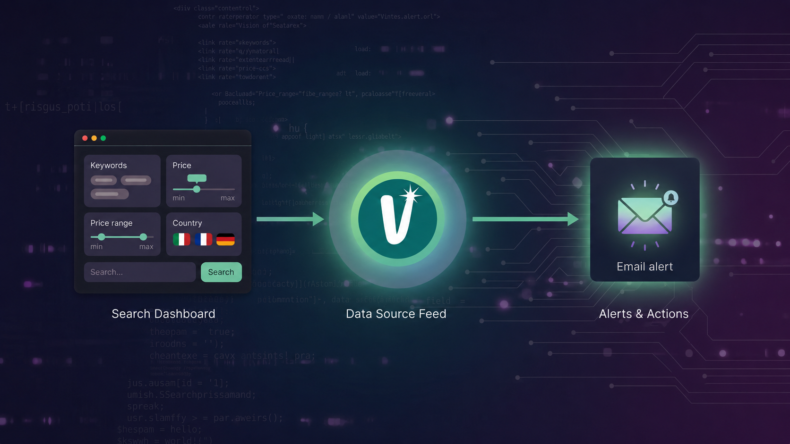

Web Student Association
Contributor to the official website of the Polimi Data Scientists, a student community at Politecnico di Milano focused on data science and AI.
HTML
CSS
JavaScript
I'm Guglielmo, a Computer Engineering student at Politecnico di Milano. I'm drawn to the places where mathematics, computation, and physical reality converge, the kind of problems that need both rigorous modelling and efficient code to solve.
Right now I'm contributing to MARCS, a research project that fuses AIS data with SAR and optical satellite imagery to detect vessels that go deliberately dark at sea. I also take part in the Polimi Data Scientists student association as a web contributor.
Outside of coursework I spend a lot of time coding for fun : building tools, exploring ideas, and occasionally optimising something that didn't really need it, you can have a look in my projects section. I also keep a running archive of notes, automations, and everything about how I organise my university life, all collected in the University hub.
Non-tech side: music production, guitar, piano, chess, and the occasional deep dive into philosophy or personal finance.
Politecnico di Milano
Sep. 2024 — Jul. 2027 · Milan, Italy
Relevant courses: Fondamenti di Informatica, Architettura dei Calcolatori e Sistemi Operativi, Analisi Matematica 1, Algebra Lineare, Fisica, Logica e Algebra, Comunicazioni e Internet, Elettrotecnica.
University hubLiceo G. Ricci Curbastro
Sep. 2019 — Jul. 2024 · Lugo, Italy
Final grade 85 / 100

Contributor to the official website of the Polimi Data Scientists, a student community at Politecnico di Milano focused on data science and AI.
Intensive program on data analysis and applied AI for strategic business decision-making, including lectures, workshops, and company visits.
Intensive summer English language program abroad (15–29 Jul. 2023).
Intensive summer English language program abroad (18–29 Jul. 2022).

Maritime Activity Recognition & Correlation System (MARCS). A multi-modal framework detecting "dark vessels", ships disabling AIS transponders to evade tracking, via AIS-gap analysis fused with SAR and optical satellite imagery. Developed within the PoliMi Data Scientists research group.

A Python poker suite powered by a high-performance C Monte Carlo simulator. Leveraging the law of large numbers through massive random sampling, it calculates precise equity against complex ranges, accurately accounting for blockers and combo frequencies.

A constraint-based meal planning engine that generates personalized weekly diet plans by solving Mixed Integer Linear Programming problems with 1900+ decision variables. Combines nutritional science, chrono-nutrition principles, and user preferences into a fully configurable MILP pipeline, built on PuLP/CBC with a Streamlit interface and a 33-scenario automated test suite.

A personal desktop quiz tool for drilling English vocabulary — type the translation, track what you keep getting wrong, review only your mistakes. Built to actually help me prepare for the IELTS.

A desktop app that automatically monitors Vinted, Europe's largest second-hand marketplace, across multiple countries and sends an instant email alert the moment a new listing matches your search criteria: price range, keywords, and brand filters included.

Four collision models, one clean interface. Elastic, inelastic, real-world impacts and explosions, each with configurable mass, velocity and shape. An experiment in turning physics formulas into something you can actually watch happen.